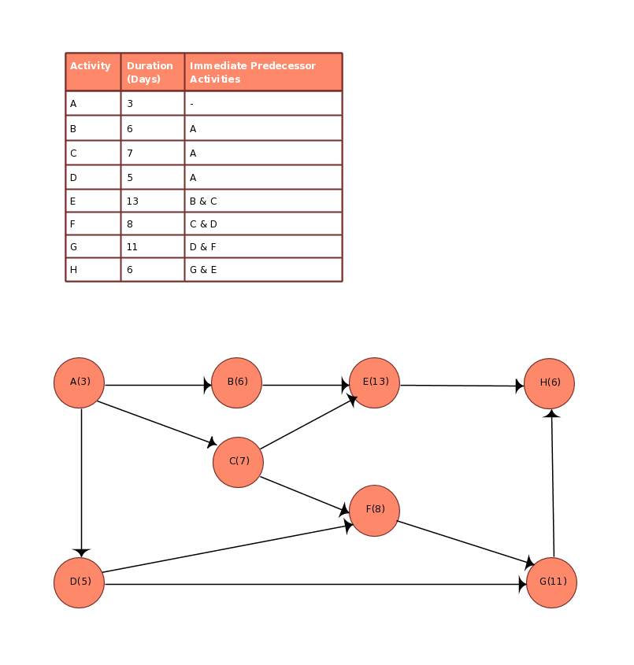

סעיף א' - מהו תרשים AOA ואיך הוא עוזר בניהול פרויקטים
זו שיטה להצגת פרויקט בצורה גרפית
בה כל פעילות מוצגת על גבי חץ, והקשרים בין הפעילויות מיוצגים על ידי צמתים
יתרונותיו שע"י הוא מסייע בניהול פרוייקטים בצורה טובה: שיקוף ויזואלי על רצף פהעילויות, מראה תלות בין פעילויות, מאפשר ניתוח זמנים- קיצור זמנים, הזזות ועוד דברים אשר נדרשים ממנהל פרוייקט כחלק מתפקידו.
להלן דוגמה לגרף כזה

סעיף ב' - הסבירו את השימושים השונים של BPMN בארגון
זו שפה גרפית סטנדרטית שמתארת תהליכים עסקיים באופן ברור.
היא משמשת ארגונים לתכנון תהליכים כמו: הזמנת לקוח, אישור תשלום, טיפול בפנייה ועוד.-
לדוגמה
סעיף ג'- מהו מודל ERD ומה חשיבותו בתכנון מסד נתונים?
זהו דיאגרמה שמתארת את מבנה מסד הנתונים – כלומר, איזה טבלאות קיימות, איך הן קשורות זו לזו, ואיזה שדות יש בכל טבלה.
לדוגמה:
הוא קריטי עבור תכנון מסד נתונים משום שהוא מאפשר תכנון לוגי לפני כתיבת הקוד, וגם זו דרך עבודה מסודרת ומדויקת שמונעת שגיאות וכפילויות, הוא מאפשר לבצע תחזוקה ושדרוגים בקוד וגם מייעל את החיפושים בו. ולכן הוא קריטי בתכנון מסד נתונים
סעיף ד' - Access נחשב לכלי לניהול מסדי נתונים, מתי כדאי להשתמש בו בארגון ומה יתרונותיו לעומת פתרונות אחרים?
כשרוצים פתרון מהיר ופשוט לניהול נתונים בלי להקים שרת SQL, או כאשר הארגון בגודל קטן עד בינוני וכאשר נצרך שילוב עם מערכות של מייקרוסופט כמו אקסל.
יתרונותיו לעומת פתרונות אחרים- בעוד ש־Access שומר את כל מסד הנתונים בקובץ אחד וכולל טפסים ודוחות בלחיצת כפתור, פתרונות כמו SQL Server דורשים התקנת שרת, עבודה בשורת פקודה, ניהול קבצים נפרדים וידע טכני נרחב – ולכן הם פחות נוחים לשימוש עבור משתמשים לא טכניים או ארגונים קטנים.